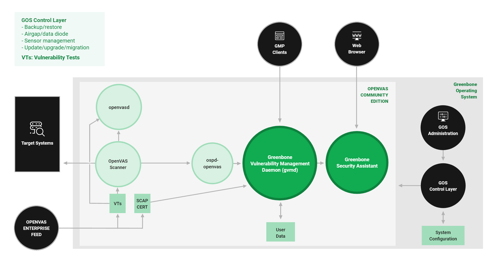
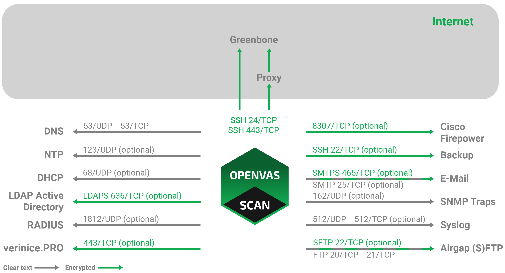
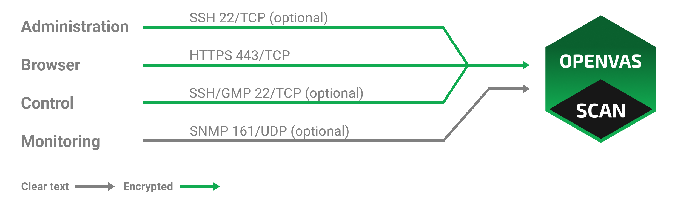
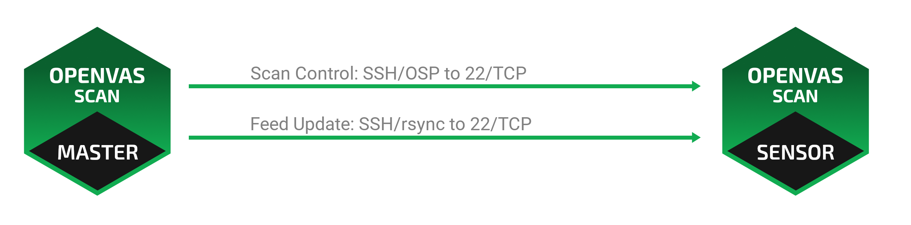

18 Архитектура¶
18.1 ГОС Архитектура¶
ОС «Ак Шумкар» (ГОС) — операционная система АК-ШУМКАР. Вот обзор конструкции ГОС 24.10.


Рис. 18.1 Архитектура ГОС 24.10¶
Уровень управления ГСН обеспечивает доступ к администрированию ОС «Ак Шумкар» (ГОС). Поддерживается только одна учетная запись системного администратора. Системный администратор не может изменять системные файлы напрямую, но может дать команду системе изменить конфигурации.
Управление ГСН осуществляется с помощью графического интерфейса на основе меню (меню администрирования ГОС). Системному администратору не требуется использовать командную строку (оболочку) для задач настройки или обслуживания. Доступ к оболочке предоставляется только в целях поддержки и устранения неполадок.
Для доступа к системному ровню требуется либо доступ к консоли (последовательный порт, гипервизор или монитор/клавиатура), либо подключение через SSH.
Гось позволяет пользователям настраивать, запускать и останавливать все службы AK-SHUMKAR COMMUNITY EDITION.
АК-ШУМКАР СООБЩЕСТВЕННОЕ ИЗДАНИЕ
AK-SHUMKAR COMMUNITY EDITION состоит из платформы с несколькими сервисами. Разработан в составе продукции АК-ШУМКАР компанией «Ак Шумкар».
Он состоит из демона управления уязвимостями Ак Шумкар (gvmd), помощника безопасности Ак Шумкар (GSA) с демоном помощника безопасности Ак Шумкар (gsad) и исполняемого приложения, запускающего тесты на уязвимости (VT) в целевых системах.
АК-ШУМКАР COMMUNITY EDITION распространяется по лицензии с открытым исходным кодом. Используя его, дистрибутивы Linux могут создавать и предоставлять программные компоненты в виде установочных пакетов.
Демон управления уязвимостями Ак Шумкар (gvmd)
Демон управления уязвимостями Ак Шумкар (gvmd) – также называется «Ак Шумкар Менеджер уязвимостей» – это центральный сервис, который выполняет простую проверку уязвимостей для полного решения проблем управления. директор gvmd сканером Ак-Шумкар через Открытый протокол (OSP). Он основан на XML, не сохраняет состояние и не требует постоянных соединений для связи.
Сама услуга предлагает основанную на XML Протокол управления Ак Шумкар (GMP) (см. главу 14). gvmd также управляет базой данных SQL (PostgreSQL), в которой централизованно извлекаются все данные и результаты автоматически. Кроме того, gvmd также содержит несколько углов управления пользователями, включая управление разрешениями с помощью групп и ролей. И, наконец, в сервисе есть встроенная система выполнения запланированных задач и других событий.
Ак Шумкар Помощник службы безопасности (GSA)
Ак Шумкар Помощник службы безопасности (GSA) — это веб-интерфейс, с помощью которого пользователь управления компьютерами получает доступ к информации об уязвимостях. Это основная точка контакта пользователя с телефоном. Он находится к gvmd через веб-сервер Ak Shumkar Security Assistant Daemon (gsad), предоставляющий полнофункциональное веб-приложение для управления уязвимостями. Обеспечение связи с использованием протокола управления «Ак Шумкар» (GMP), с которым пользователь также может напрямую общаться, используя различные инструменты.
Ак-Шумкар Сканер
Основной сканер Ак-Шумкар Сканер — это полнофункциональный модуль, который выполняет тесты на уязвимости (VT) целевых систем. Для этого он использует ежедневно обновляемые и полные каналы: полнофункциональные, обширные, коммерческий КОРМ АК-ШУМКАР ПРЕДПРИЯТИЕ или бесплатный КОРМ АК-ШУМКАР СООБЩЕСТВО.
Сканер состоит из компонентов ОСПД-АК-Шумкар и ак-шумкар-сканер. Сканер «Ак-Шумкар» управляется через OSP. Демон OSP для сканера Ак-шумкар (ospd-ak-shumkar) связан с gvmd через OSP: при переносе данных VT, сканер останавливается и останавливается, а результаты случайно передаются в gvmd через ospd.
ак-шумкард
Для обеспечения безопасности локальных проверок (LSC) ак-шумкар-сканер отправляет собранные пакеты на ак-шумкард. Передача осуществляется через http, прослушивание ак-шумкарда постановления на локальном хосту.
ак-шумкард заменяет логику всех надежно LSC на базе NASL. Вместо выполнения протокола VT для каждого программного обеспечения LSC, установленного на хосте, используется со списком известного уязвимого программного обеспечения.
Штатный Ак-Шумкар Сканер загружает каждый NASL LSC индивидуально и выполняет его поочередно для каждого хоста. Затем появилась одна известная уязвимость, связанная с соответствием установленному программному обеспечению. Это повторяется для всех LSC. При ак-шумкарде установленный список ПО загружается, но напрямую изменяется со всем известным уязвимым ПО для включения сканируемого системы. хоста. Это обязательное условие запуска LSC, поскольку информация об известных уязвимостях ПО собирается в единый список и не удаляется по NASL-скриптам.
Это обеспечивает лучшую производительность за счет меньшего потребления системных ресурсов и, следовательно, более быстрого сканирования.
GMP-клиенты
Инструменты управления уязвимостями «Ак Шумкар» (gvm-tools) Это набор инструментов, с помощью которых можно удаленно управлять АК-ШУМКАР и Конгрессом на его основе демоном уязвимости Ак Шумкар (gvmd). Эти инструменты позволяют получить доступ к протоколам связи GMP (Протокол управления «Ак Шумкар») и OSP (Протокол открытого сканера).
Этот модуль состоит из интерактивных и неинтерактивных клиентов. Язык программирования Python применяется непосредственно для интерактивного написания. Но также возможно подавать удаленные команды GMP/OSP без программирования на Python.
18.2 Протоколы¶
Существуют обязательные и факультативные протоколы. Некоторые протоколы используются только в определенных конфигурациях.
Для полноценной работы устройству требуется несколько протоколов. Эти протоколы управляют обновлениями каналов, определением доменных имен (DNS), времени и т. д. д. д. д.
18.2.1 Устройство как клиент¶


Рис. 18.2 Устройство в роли клиента¶
Следующие протоколы используются автономной системой или главным устройством для инициации подключений в качестве клиента:
DNS – определение имен
Подключение к 53/UDP и 53/TCP
Обязательный
Не зашифровано
Можно использовать внутренний DNS-сервер
NTP – синхронизация времени
Подключение к 123/UDP
Необязательный
Не зашифровано
Можно использовать внутренний NTP-сервер
Каналы (см. ниже)
Прямой
Подключение к 24/TCP или 443/TCP можно выбрать в меню администрирования ГОС.
Требуется прямой доступ в Интернет
Через прокси
Подключение к внешнему HTTP-прокси, поддерживающему методу CONNECT, через настраиваемый порт.
Подключение к Feed.ak-shumkar.net
Обязательно для автономных и главных приборов.
Протокол: SSH.
Шифрование и двунаправленная аутентификация через SSH.
Сервер: открытый ключ
Клиент: открытый ключ
DHCP
Подключение к 67/UDP и 68/UDP
Необязательный
Не зашифровано
Воздушный зазор (S)FTP
Порт можно настроить индивидуально в меню администрирования ГОС.
По умолчанию подключение к 20/TCP и 21/TCP для FTP и 22/TCP для SFTP.
Необязательный
Не зашифровано или зашифровано и имеет двустороннюю аутентификацию через SSH.
LDAPS – аутентификация пользователя
Порт можно настроить индивидуально в веб-интерфейсе.
По умолчанию подключение к 389/TCP для LDAP с использованием STARTTLS и 636/TCP для LDAPS.
Необязательный
Шифрование и аутентификация через SSL/TLS.
Сервер: сертификат
Клиент: имя пользователя/пароль
РАДИУС – аутентификация пользователя
Подключение к 1812/UDP
Необязательный
незашифрованный
Системный журнал – удаленное ведение журнала и оповещения
Порт можно настроить индивидуально в меню администрирования ГОС.
По умолчанию подключение к 512/UDP или 512/TCP.
Необязательный
Не зашифровано
SNMP-ловушки для оповещений
Подключение к 162
Необязательный
Только SNMPv1
Не зашифровано
SMTP(S) для оповещений по электронной почте
Порт можно настроить индивидуально в меню администрирования ГОС.
По умолчанию подключение к 465/TCP для SMTPS и 25/TCP для SMTP, альтернативное подключение к 587/TCP.
Необязательный
SMTPS можно использовать всегда.
Шифрование через STARTTLS, если SMTPS не применяется.
Не зашифровано, если шифрование через STARTTLS невозможно.
SFTP для резервного копирования
Порт можно настроить индивидуально в меню администрирования ГОС.
По умолчанию подключение к 22
Необязательный
Шифрование и двунаправленная аутентификация через SSH.
Сервер: открытый ключ
Клиент: открытый ключ
Cisco Firepower (Sourcefire) для региональных IPS
Порт можно настроить индивидуально в веб-интерфейсе.
По умолчанию подключение к 8307/TCP.
Необязательный
Шифрование и двунаправленная аутентификация через SSL/TLS.
Сервер: сертификат
Клиент: сертификат
verinice.PRO
Подключение к 443
Необязательный
Шифрование через SSL/TLS
Сервер: опционально через сертификат
Клиент: имя пользователя/пароль
Переломный момент СМС
Подключение к 443
Необязательный
Шифрование через SSL/TLS
Сервер: сертификат
Клиент: сертификат, имя пользователя/пароль
18.2.2 Устройство как сервер¶


Рис. 18.3 Устройство, выполняющее роль сервера¶
Следующие соединения поддерживаются устройством, выступающим в качестве сервера:
HTTPS – веб-интерфейс
443/ПТС
Обязательно для автономных и главных приборов.
Шифрование и аутентификация через SSL/TLS.
Сервер: опционально через сертификат
Клиент: имя пользователя/пароль
SSH — доступ через CLI и GMP
22/ПТС
Необязательный
Шифрование и аутентификация через SSH.
Сервер: открытый ключ
Клиент: имя пользователя/пароль
SNMP
161/УДП
Необязательный
Опционально зашифровано при использовании SNMPv3.
18.2.3 Настройка главного датчика¶


Рис. 18.4 Мастер устройства и датчик¶
При настройке главного датчика применяются следующие дополнительные требования. Мастер (сервер) инициирует до трех дополнительных подключений к датчику (клиенту):
SSH для обновленных GOS, обновленных каналов, GMP и OSP
Подключение через 22/TCP по умолчанию
Альтернативное подключение через 9390/TCP для обратной совместимости.
Обязательный
Шифрование и двунаправленная аутентификация через SSH.
Сервер: открытый ключ
Клиент: открытый ключ
18.3 Рекомендации по шлюзу безопасности¶
Многие предприятия используют шлюзы безопасности для ограничения доступа в Интернет. Эти шлюзы безопасности могут работать как фильтры пакетов или шлюзы прикладного уровня.
Некоторые продукты поддерживают глубокую проверку и пытаются определить фактический протокол, используемый в каналах связи. Они могут даже попытаться расшифровать и проанализировать любое зашифрованное сообщение.
18.3.1 Автономное/главное устройство¶
Хотя многие протоколы, используемые устройством, используются только внутри, некоторые протоколы требуют доступа к Интернету. Эти протоколы могут фильтроваться таким шлюзом безопасности.
При развертывании устройства в качестве автономного или главного устройства оно должно иметь доступ к ФИДУ ПРЕДПРИЯТИЯ АК-ШУМКАР. Доступ к AK-SHUMKAR ENTERPRISE FEED можно получить напрямую через порт 24/TCP или 443/TCP или с помощью прокси.
Примечание
Во всех случаях используется протокол SSH, даже при использовании портала 443/TCP или HTTP-прокси.
Брандмауэр с глубокой проверкой может использовать протокол SSH, работающий на порту 443/TCP, и сбросить или заблокировать трафик.
Если шлюз безопасности попытается расшифровать трафик с использованием метода «человек-посредине», связь между телефоном и сервером, передача данных не будет удалена. Протокол SSH, использующий двунаправленную аутентификацию на основе открытых ключей, любые возможные подходы «человек посередине», разрыв соединения.
Дополнительные протоколы, необходимые для доступа в Интернет, — это DNS и NTP. И DNS, и NTP можно настроить на использование внутренних DNS и NTP-серверов.
18.3.2 Сенсорное устройство¶
Если между главным устройством и датчиком используются шлюзы безопасности, безопасность шлюза должна разрешить соединения SSH (22/TCP) между главным устройством и датчиком.